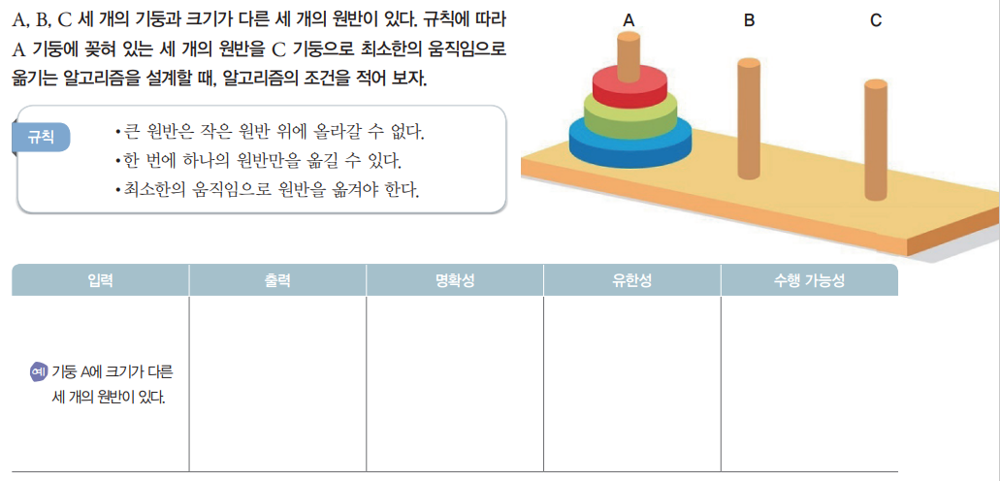
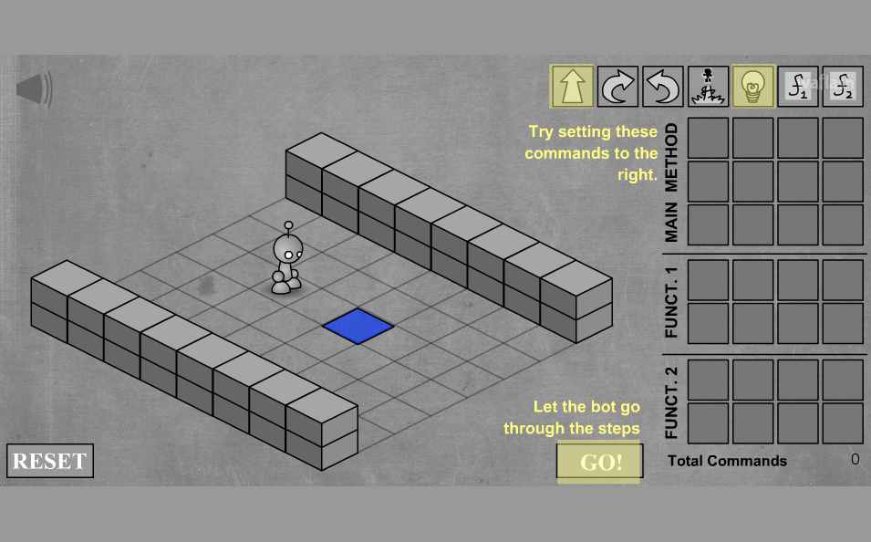
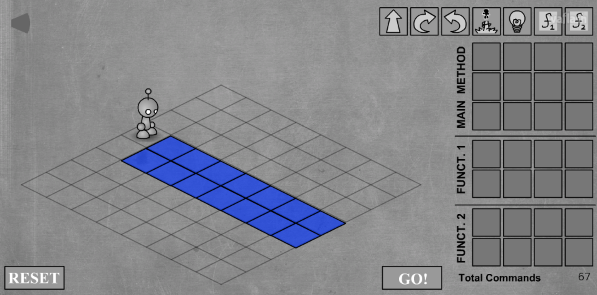
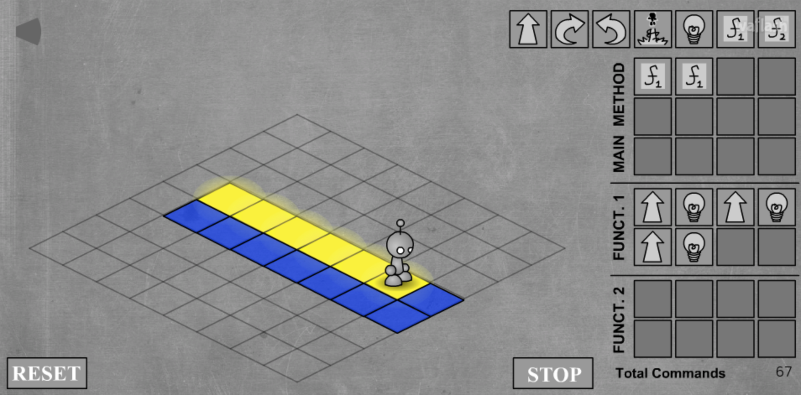
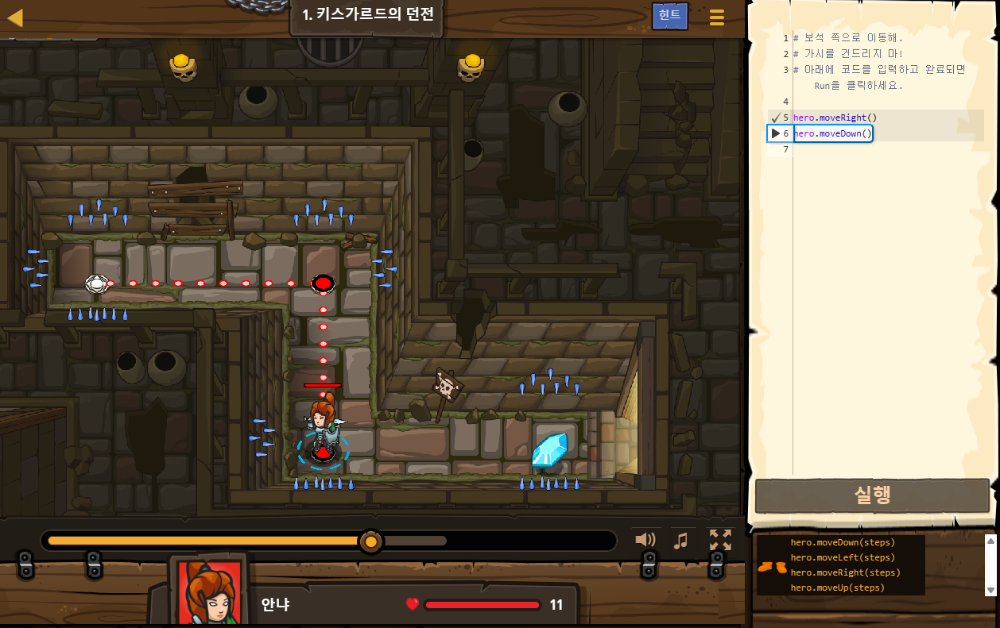
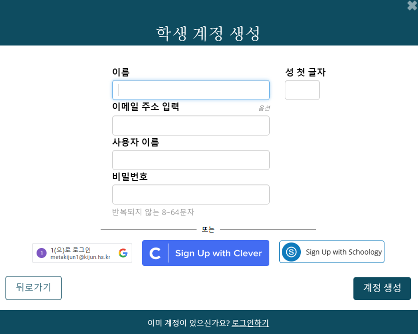

알고리즘과 프로그래밍
문제를 해결하는 절차적 사고력을 기르고,
프로그래밍으로 직접 구현해 봅시다.
오늘의 학습 목표
이번 수업을 마치면 다음을 할 수 있어요
-
1
🗼 하노이의 탑 탐구 활동
규칙에 따라 원반을 옮기며 '알고리즘적 사고'를 직접 체험합니다.
-
2
🧠 알고리즘의 개념과 3가지 구조 이해
알고리즘의 의미와 순차·선택·반복 구조를 이해합니다.
-
3
✅ 알고리즘으로 해결 가능한 문제의 조건 파악
명확성·입출력·유한성·실현 가능의 4가지 조건을 알 수 있습니다.
-
4
🎮 라이트봇 · 코드컴뱃으로 프로그래밍 체험
게임으로 알고리즘을 직접 구현하는 경험을 합니다.
저번 시간 기억나시나요? 💣
VR 폭탄해체반에서 폭탄을 해제하기 위해 여러분은 무엇을 했나요? — 질문을 클릭해서 확인해보세요!

먼저 해봅시다! 🗼 하노이의 탑
개념을 배우기 전, 직접 문제를 풀어보세요
📋 활동 안내
A, B, C 세 개의 기둥이 있습니다.
기둥 A에 꽂혀 있는 세 개의 원반을 기둥 C로 옮기되,
최소한의 움직임으로 옮기는 알고리즘을 설계하세요.
📌 규칙
- 큰 원반은 작은 원반 위에 올라갈 수 없다
- 한 번에 하나의 원반만 옮길 수 있다
- 최소한의 움직임으로 원반을 옮겨야 한다

📝 활동지 기록
입력 / 출력 / 명확성 / 유한성 / 수행 가능성 칸을
직접 채워봅시다. (수업 후반에 다시 확인합니다!)
하노이의 탑 게임으로 직접 풀어봐요!
규칙을 지키면서 가장 적은 횟수로 원반을 옮겨보세요
게임 목표
A 기둥의 원반 3개를 C 기둥으로 모두 옮기기. 큰 원반이 작은 원반 위에 올라가면 안 됩니다!
풀면서 생각해보기
- 어떤 규칙이 있어야 게임이 가능한가요?
- 게임에 끝이 있나요? 언제 끝나나요?
- 각 단계에서 할 수 있는 행동이 명확한가요?
- 이 문제의 입력과 출력은 무엇인가요?
알고리즘 — 이름의 유래
"algorithm"은 어디서 왔을까요?
무함마드 이븐 무사 알 콰리즈미 (780~850년경)
알 콰리즈미 (Al-Khwārizmī)
9세기 페르시아의 수학자이자 천문학자. 그의 이름 "알 콰리즈미"가 라틴어로 전해지면서 "알고리즘"이라는 단어가 만들어졌습니다.
수학적 업적
대수학(Algebra)의 기초 확립, 0과 10진법 도입, 문제를 해결하는 절차적 접근법 제시
과학적 업적
천문학 및 삼각법을 활용한 계산법 발전, 지리학 연구와 경도·위도 개념 보완
알고리즘이란 무엇인가?
우리 일상 속에 이미 알고리즘이 있습니다
명확하고 유한한 단계의 문제 해결 절차
🗺️ 예시 — 내비게이션(GPS) 앱
목적지
도로 정보
최적 경로 계산
예상 소요 시간
명확한 순서
각 단계는 누가 봐도 이해할 수 있을 만큼 명확합니다. 모호한 지시는 알고리즘이 아닙니다.
반드시 끝남
무한히 실행되지 않습니다. 언젠가는 결과를 내고 종료합니다.
결과가 정확함
같은 입력에는 항상 같은 출력이 나옵니다. 우연이나 감에 의존하지 않습니다.
모든 알고리즘은 3가지 구조로 이루어집니다
아무리 복잡한 프로그램도 이 세 가지의 조합입니다
물 끓이기 → 면 넣기 → 수프 넣기 → 3분 기다리기 → 완성
기분이 좋으면 → 신나는 노래
기분이 우울하면 → 잔잔한 노래
원하는 정보가 나올 때까지
스크롤하며 결과 확인 반복
알고리즘으로 모든 문제를 풀 수 있을까요?
모든 문제가 알고리즘으로 해결되는 것은 아닙니다 — 4가지 조건이 필요합니다
① 명확성 문제가 분명하게 정의되어야 합니다
"누가 봐도 같은 방법으로 풀 수 있을 만큼" 명확해야 합니다
하노이의 탑 — 명확성 체크 ✅
• 큰 원반은 작은 원반 위에 올라갈 수 없다
• 한 번에 하나의 원반만 옮길 수 있다
• A 기둥의 원반을 C 기둥으로 옮긴다
• 최소 이동 횟수로 달성한다
② 입력과 출력 무엇을 넣고 무엇이 나오는지 정확히
알고리즘은 "블랙박스"처럼 — 입력을 받아 처리하고 출력을 냅니다
예시 1 — 길 찾기
예시 2 — 음악 추천
하노이의 탑 — 입출력 ✅
📤 출력: 원반이 모두 C 기둥에 쌓인 상태
→ 원반 3개이면 최소 7번의 이동 기록
③ 유한성 & ④ 실현 가능
언젠가는 끝나야 하고, 각 단계는 실제로 할 수 있어야 합니다
→ 학생 수(n)가 정해져 있으므로 최대 n²번 비교 후 반드시 종료
→ 완벽의 기준이 없으면 영원히 끝나지 않을 수 있음
하노이의 탑 — 유한성 ✅
원반 n개일 때, 정확히 2ⁿ−1번 이동 후 완료.
원반 3개 → 7번, 10개 → 1023번. 항상 끝납니다.
→ 각 단계(두 학생 키 비교 후 교환)는 누구나 할 수 있음
→ 어떻게 대화를 수치화하고 처리할지 정의되지 않음
하노이의 탑 — 실현 가능 ✅
각 단계: "원반 하나를 한 기둥에서 다른 기둥으로 옮기기"
누구든 실제로 할 수 있는 명확한 행동입니다.
하노이의 탑은 알고리즘 문제일까요?
활동지를 펼치고 함께 확인해 봅시다
| 조건 | 하노이의 탑에서는? | 판정 |
|---|---|---|
| ① 명확성 | 규칙(큰 원반 금지, 한 번에 하나)이 명확하게 정의됨 | ✅ 충족 |
| ② 입력 | 기둥 A에 크기가 다른 n개의 원반이 있는 상태 | ✅ 충족 |
| ② 출력 | 모든 원반이 기둥 C에 크기 순서대로 쌓인 상태 | ✅ 충족 |
| ③ 유한성 | 정확히 2ⁿ−1번 이동 후 반드시 완료됨 | ✅ 충족 |
| ④ 실현 가능 | 각 단계(원반 하나 이동)는 실제로 가능한 행동 | ✅ 충족 |
알고리즘으로 해결할 수 있는 문제입니다!
라이트봇으로 알고리즘 체험하기
코딩 없이 명령 블록으로 알고리즘의 3가지 구조를 직접 느껴보세요

순차 구조
명령을 순서대로 입력하여 로봇을 이동시킵니다.
함수 (재사용)
반복되는 명령을 FUNCT 1/2에 묶어 재사용합니다. → 반복·추상화
🕹️ 조작 방법
앞으로
왼쪽 회전
오른쪽 회전
불 켜기
게임에서 등장한 알고리즘 — 순차 구조
명령을 순서대로 실행하여 파란 타일을 모두 밝혀보세요

📋 이 단계에서 사용된 구조
앞으로 이동 → 불 켜기 → 앞으로 → ... 순서대로 실행
🤔 생각해보기
가장 적은 명령으로 모든 파란 타일을 켤 수 있을까요?
🔗 알고리즘 연결
명령 블록 하나 = 알고리즘의 단계(step) 하나입니다.
게임에서 등장한 알고리즘 — 함수 & 반복
반복되는 패턴을 FUNCT에 묶으면 알고리즘이 훨씬 짧아집니다

반복되는 명령 묶음에 이름을 붙여 재사용합니다.
→ 앞 2칸 + 불 켜기를 FUNCT 1에 저장하면, 이후엔 FUNCT 1 한 번만 호출하면 됩니다.
같은 결과라도 더 적은 단계로 표현할수록 좋은 알고리즘입니다.
텍스트 프로그래밍 체험 — CodeCombat
게임 속 영웅을 코드로 조종해보세요
CodeCombat이란?
RPG 게임 형식으로 실제 프로그래밍 언어(Python/JavaScript)를 배우는 플랫폼입니다. 코드를 작성하면 게임 캐릭터가 그대로 움직입니다!

오늘 배울 코드
hero.moveDown()
hero.moveLeft()
hero.moveUp()
위 링크를 클릭하거나 codecombat.com에서 학생으로 가입하세요
CodeCombat 학생 계정 만들기
수업 코드를 입력하면 선생님의 수업에 자동으로 연결됩니다

가입 순서
- 1링크 접속 또는 수업 코드 입력
- 2이름과 사용자 이름 입력
- 3비밀번호 설정 (8~64자)
- 4계정 생성 버튼 클릭
-
✓바로 첫 번째 미션 시작!
"1(으)로 로그인" 버튼을 누르면 학교 구글 계정으로 빠르게 가입할 수 있어요.